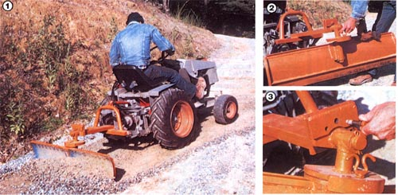

[I]The home built blade can be used to push or draw-with equal ease. [2] A vertical pivot allows a full range of scrape angles for such tasks as grading and smoothing. Note the reinforcing framework at the blade's edges. [3] At horizontal pivot enables the cutter to be used for shallow ditching and crowning.